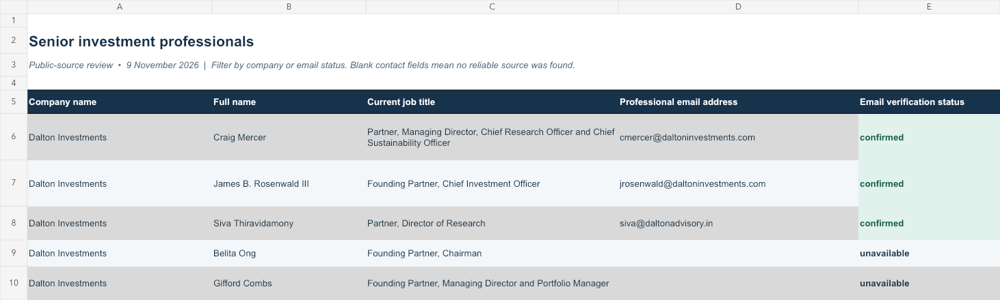
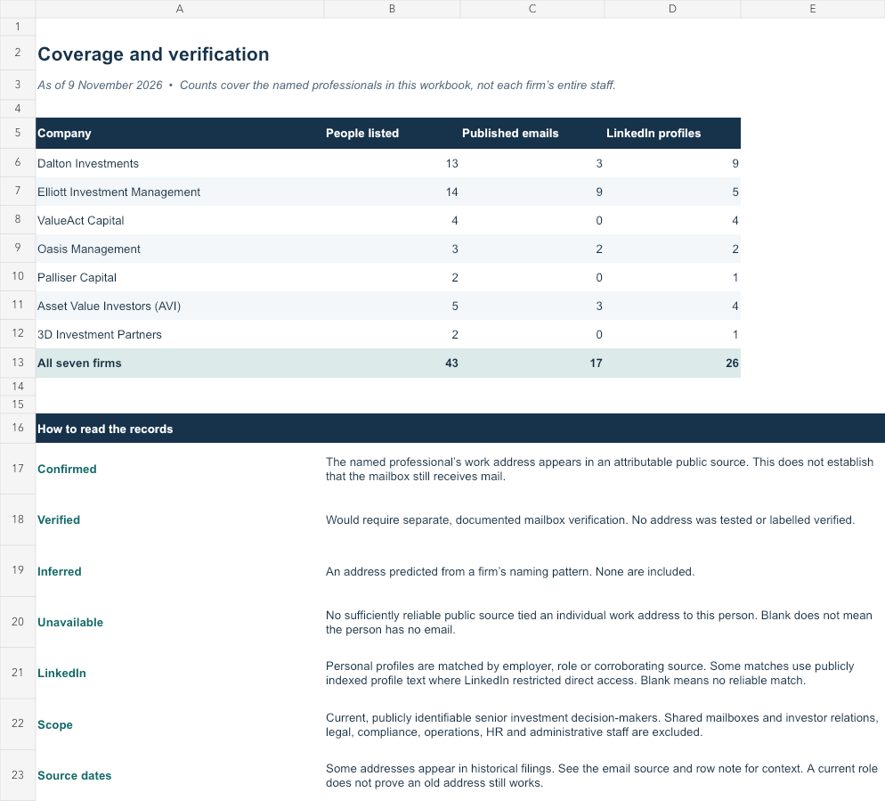

The result
The review identified 43 senior investment professionals. Public documents explicitly connected 17 work addresses to named people, and 26 personal LinkedIn profiles were matched by employer, role or another reliable source.


Download the Excel workbook ↗ · View the CSV ↗ · Open the repository ↗
Coverage by firm
| Firm | People | Published emails | LinkedIn profiles |
|---|---|---|---|
| Dalton Investments | 13 | 3 | 9 |
| Elliott Investment Management | 14 | 9 | 5 |
| ValueAct Capital | 4 | 0 | 4 |
| Oasis Management | 3 | 2 | 2 |
| Palliser Capital | 2 | 0 | 1 |
| Asset Value Investors (AVI) | 5 | 3 | 4 |
| 3D Investment Partners | 2 | 0 | 1 |
How the evidence was kept honest
Official team pages and regulator filings established current roles. Public company filings, shareholder agreements, campaign letters and firm documents supplied individual email evidence. A current title did not make an old address current, so the workbook records separate role and email sources.
Shared investor-relations, legal, media, recruiting and campaign inboxes were excluded. Missing addresses stayed blank. No email was created from a company naming pattern.
The public repository includes the Excel and CSV files, the full methodology, and a validation script that checks required fields, duplicate people, allowed status labels, personal LinkedIn links and evidence for every listed email.
What this does not prove
“Confirmed” means a cited source explicitly published the address for the named person. No mailbox was tested. Some evidence is historical, so each row states the date or limitation. The sample does not claim complete staff coverage, permission to send outreach or future accuracy after firms change their teams and websites.